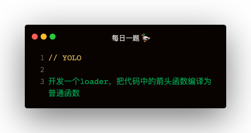

解答
const transformer = require("@babel/core");
const t = require('@babel/types')
module.exports = function(content, map, meta) {
const ArrowFunctionToFunctionPlugin = {
visitor: {
ArrowFunctionExpression(path) {
const ruturnStatement = t.returnStatement(path.node.body)
const blockStatement = t.blockStatement([ruturnStatement])
const funcExpr = t.functionExpression(null, path.node.params, blockStatement)
path.replaceWith(funcExpr)
}
}
}
const result = transformer.transform(content, {
plugins: [ArrowFunctionToFunctionPlugin]
})
return result.code
}
loader的配置
resolveLoader: {
modules: [path.resolve(__dirname, 'loaders')],
extensions: ['.js'],
mainFields: ['loader']
}